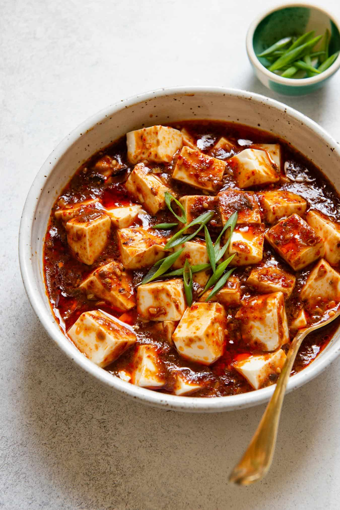

Mapo Tofu

This shit is straight bussin like it's spicy it's got flavour maxxing out the chungus. You gotta make this ok?
No seriously you gotta make this, why are you still reading??? Hit the plug below!!!
Ingredients
- 4 or 5 dried shiitake mushrooms
- 450 grams of firm tofu, cut into cubes
- 1 tablespoon potato starch
- 3 tablespoons vegetable oil
- 2 tablespoosn whole Sichuan peppercorns
- 5 dried red chilis, cut into small segments and seeds shaken out
- 1 tablespoon each of minced fresh ginger and garlic
- 2 and a half tablespoons of doubanjiang (don't sleep on this)
- 1 teaspoon ground Sichuan chile or chili flakes
- 1 cup unsalted stock or water
- half a teaspoon of sugar
- 1 teaspoon of soy sauce
- 2 spring onions, greent parts only thinly sliced for garnish
- half a teaspoon ground Sichuan peppercorns
Instructions
Alright cobba, are you ready to make this?
- Soak the mushrooms in hot water for 30 minutes then drain and chop them
- Make a slurry by combining the starch and a quarter cup of water in a small bowl. Stire until smooth and set aside.
- Heat a wok over medium heat until smoking, then reduce the heat to low. Add the oil swirling to cover the wok then add the whole Sichuan peppercorns and dried chilis to infuse the oil for 1 minute. Do not burn them!!!
- Return the wok to medium heat then add the mushrooms, ginger and garlic. Fry for 1 minute.
- Add the doubanjiang and ground chili stir fry briefly.
- Pour in the stock then add the sugar, bring the stock to a boil
- Add in the tofu cubes try to keep them from breaking while stiring them in stock. Bring the stock to a full boil.
- Give the starch slurry a stir then drizzle the slurry in one third at a time. Doing this will make the stock more glossy and stick to the tofu creating a sauce.
- Take the wok off the heat and transfer everything to a serving dish. Garnish with the greens of the spring onions. Eat it up champion you did great!